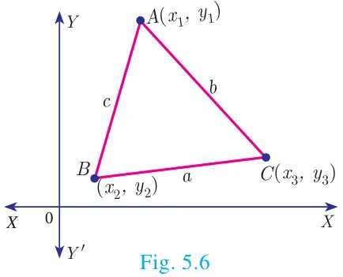
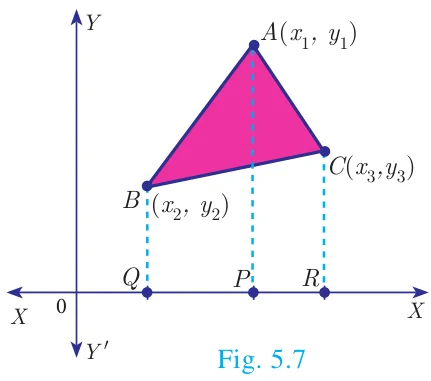

5.2 Area of a Triangle

In your earlier classes, you have studied how to calculate the area of a triangle when its base and corresponding height (altitude) are given. You have used the formula.
\(\text{Area of triangle} = \dfrac{1}{2} \times \text{base} \times \text{altitude} \text{ sq.units.}\)
With any three non-collinear points \(A(x_1, y_1)\), \(B(x_2, y_2)\) and \(C(x_3, y_3)\) on a plane, we can form a triangle \(ABC\).
Using distance between two points formula, we can calculate \(AB = c\), \(BC = a\), \(CA = b\). \(a, b, c\) represent the lengths of the sides of the triangle \(ABC\).
Using \(2s = a + b + c\), we can calculate the area of triangle \(ABC\) by using the Heron’s formula \(\sqrt{s(s - a)(s - b)(s - c)}\). But this procedure of finding length of sides of \(\Delta ABC\) and then calculating its area will be a tedious procedure.

There is an elegant way of finding area of a triangle using the coordinates of its vertices. We shall discuss such a method below.
Let \(ABC\) be any triangle whose vertices are at \(A(x_1, y_1)\), \(B(x_2, y_2)\) and \(C(x_3, y_3)\).
Draw \(AP\), \(BQ\) and \(CR\) perpendiculars from \(A\), \(B\) and \(C\) to the \(x\)-axis, respectively.
Clearly \(ABQP\), \(APRC\) and \(BQRC\) are all trapeziums.
Now from Fig. 5.7, it is clear that
Area of \(\Delta ABC\)
= Area of trapezium \(ABQP\) + Area of trapezium \(APRC\) − Area of trapezium \(BQRC\).
You also know that, the area of trapezium
\(= \dfrac{1}{2} \times (\text{sum of parallel sides}) \times (\text{perpendicular distance between the parallel sides})\)
Therefore, Area of \(\Delta ABC\)
\(= \dfrac{1}{2}(BQ + AP)QP + \dfrac{1}{2}(AP + CR)PR - \dfrac{1}{2}(BQ + CR)QR\)
\(= \dfrac{1}{2}(y_2 + y_1)(x_1 - x_2) + \dfrac{1}{2}(y_1 + y_3)(x_3 - x_1) - \dfrac{1}{2}(y_2 + y_3)(x_3 - x_2)\)
\(= \dfrac{1}{2}\left\{x_1(y_2 - y_3) + x_2(y_3 - y_1) + x_3(y_1 - y_2)\right\}\)
Thus, the area of \(\Delta ABC\) is the absolute value of the expression
\(= \dfrac{1}{2}\left\{x_1(y_2 - y_3) + x_2(y_3 - y_1) + x_3(y_1 - y_2)\right\} \text{ sq.units.}\)
The vertices \(A(x_1, y_1)\), \(B(x_2, y_2)\) and \(C(x_3, y_3)\) of \(\Delta ABC\) are said to be “taken in order” if \(A\), \(B\), \(C\) are taken in anticlockwise direction. If we do this, then area of \(\Delta ABC\) will never be negative.
Note
“As the area of a triangle can never be negative, we must take the absolute value, in case area happens to be negative”.
Another form
The following pictorial representation helps us to write the above formula very easily.
\(\text{Area of } \Delta ABC = \dfrac{1}{2}\left|\begin{array}{ccccccc} x_1 & & x_2 & & x_3 & & x_1 \\ & \times & & \times & & \times & \\ y_1 & & y_2 & & y_3 & & y_1 \end{array}\right|\)
\(= \dfrac{1}{2}\left\{(x_1y_2 + x_2y_3 + x_3y_1) - (x_2y_1 + x_3y_2 + x_1y_3)\right\} \text{ sq.units.}\)
Progress Check
The vertices of \(\Delta PQR\) are \(P(0, -4)\), \(Q(3, 1)\) and \(R(-8, 1)\)
- Draw \(\Delta PQR\) on a graph paper.
- Check if \(\Delta PQR\) is equilateral.
- Find the area of \(\Delta PQR\).
- Find the coordinates of \(M\), the mid-point of \(QP\).
- Find the coordinates of \(N\), the mid-point of \(QR\).
- Find the area of \(\Delta MPN\).
- What is the ratio between the areas of \(\Delta MPN\) and \(\Delta PQR\)?
5.2.1 Collinearity of three points
If three distinct points \(A(x_1, y_1)\), \(B(x_2, y_2)\) and \(C(x_3, y_3)\) are collinear, then we cannot form a triangle, because for such a triangle there will be no altitude (height). Therefore, three points \(A(x_1, y_1)\), \(B(x_2, y_2)\) and \(C(x_3, y_3)\) will be collinear if the area of \(\Delta ABC = 0\).
Note
Another condition for collinearity
If \(A(x_1, y_1)\), \(B(x_2, y_2)\) and \(C(x_3, y_3)\) are collinear points, then
\(x_1(y_2 - y_3) + x_2(y_3 - y_1) + x_3(y_1 - y_2) = 0\)
or \(x_1y_2 + x_2y_3 + x_3y_1 = x_1y_3 + x_2y_1 + x_3y_2\).
Similarly, if the area of \(\Delta ABC\) is zero, then the three points lie on the same straight line. Thus, three distinct points \(A(x_1, y_1)\), \(B(x_2, y_2)\) and \(C(x_3, y_3)\) will be collinear if and only if area of \(\Delta ABC = 0\).